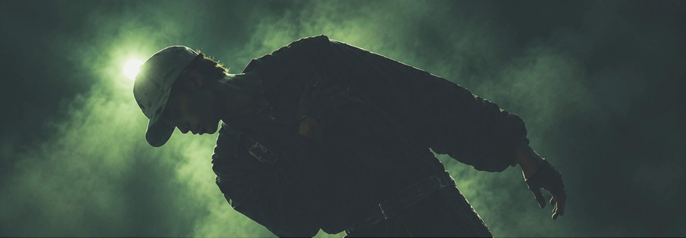
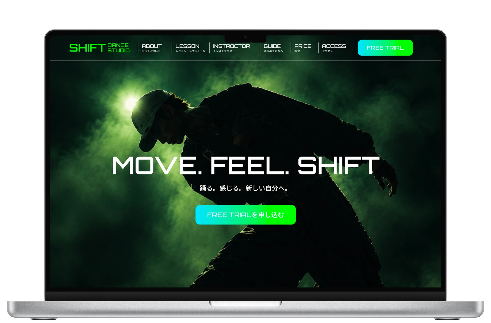
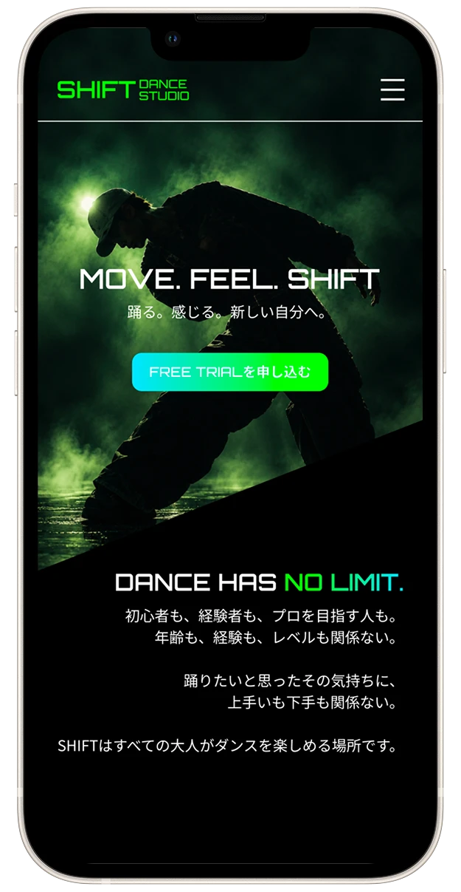

SHIFT DAMCE STUDIO


制作期間
ワイヤーフレーム：1日
デザイン：4日
コーディング：3日
使用ツール

Figma

HTML/CSS
概要
18歳以上を対象とした、東京の架空のダンススクール「SHIFT DANCE STUDIO」のWebサイトです。
初心者から経験者まで、自分のレベルに合わせてダンスを楽しめるスクールを想定して制作しました。
ターゲット
18歳以上のダンス初心者〜経験者、プロを目指す人。
ダンスを始めたい人や、仕事と両立しながら無理なく通いたい人、自分のレベルに合ったレッスンを受けたい人を想定しました。
特にキッズ中心のスクールに抵抗がある人や、経験者ばかりのクラスについていけるか不安な初心者など、ダンスを始めることに不安を感じている層を意識しました。
目的
体験レッスンへの申し込みに繋げ、入会を促すことを目的としています。
「少し気になる」「やってみたいけれど不安」と言った検討段階のユーザーにも興味を持ってもらえるよう、説得するのではなく、安心して一歩を踏み出せる情報設計を意識しました。
「自分に合いそう」「初心者でも大丈夫そう」「ちゃんと成長できそう」「無理なく通えそう」と感じてもらい、まずは体験してみようと思えるサイトを目指しました。
コンセプト
「すべての大人がダンスを楽しめる場所」
大人になってからダンスを始める人にも、一歩を踏み出してもらえるスクールを目指しました。
初心者が安心してスタートできる環境と、経験を積んだ先にさらに上を目指せる環境の両方を用意し、自分の現在地に合ったクラスから次のレベルへとステップアップできる環境を設計しました。
デザイン
ブラック・ホワイトをベースにグリーンをアクセントとして使用し、都会的でスタイリッシュなデザインにしました。
大人の趣味やサークルというカジュアルな印象に寄りすぎず、スクールとしての信頼感や、「ここに所属していること自体が誇りになる」と思ってもらえるようなスクールそのものに魅力を感じてもらえるデザインを意識しました。
また、ダンスに詳しくない人でもサービス内容を理解できるよう、情報を詰め込みすぎず、日本語による補足説明も加えています。
レッスン内容や料金、アクセスなど、入会を検討する際に必要な情報もしっかり伝えられる構成とし、複数のスクールを比較するユーザーにも選んでもらえるサイトを目指しました。